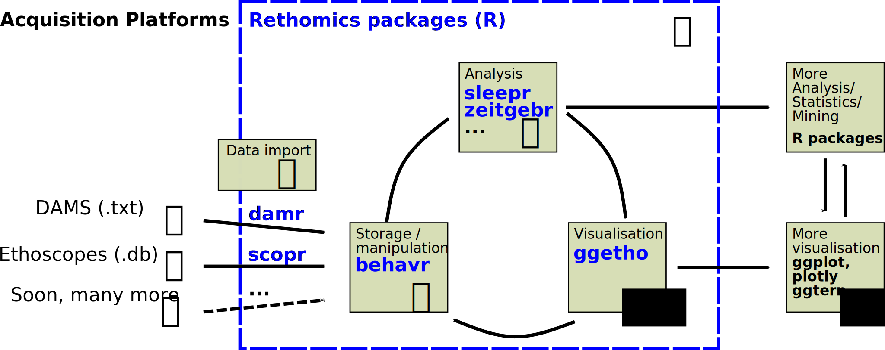

Rethomics, a framework for high-throughput behaviour analysis in R
Quentin Geissmann
2017-09-06
Chapter 1 Introduction
If we share a common data structure, we can use a commmon set of tools

In the last few years, there has been growing interests in ethomics – that is, the analysis of large behavioural data sets. Many software and hardware solutions have been proposed to record different behavioural variables on several model organisms. Although are many similarities in the analysis and visualisation that are independent of the acquisition tool, each method tends to provide its own output format and, in practice, its own analysis software. This results in a lot of replicated work and prohibits interation between methods of analysis.
Rethomics attempts to unify analysis of behaviour by providing: * behavr tables – a flexible and universal structure to handle very large behavioural data sets * damr, scopr, … – packages to load data from DAMS, ethoscopes and others into behavr tables * ggetho – a package, based on ggplot2, to produce high quality visualisation of behavioural data * sleepr, rhythmr, … – packages to analyse behavioural data (sleep analysis, circadian rhythm, …).